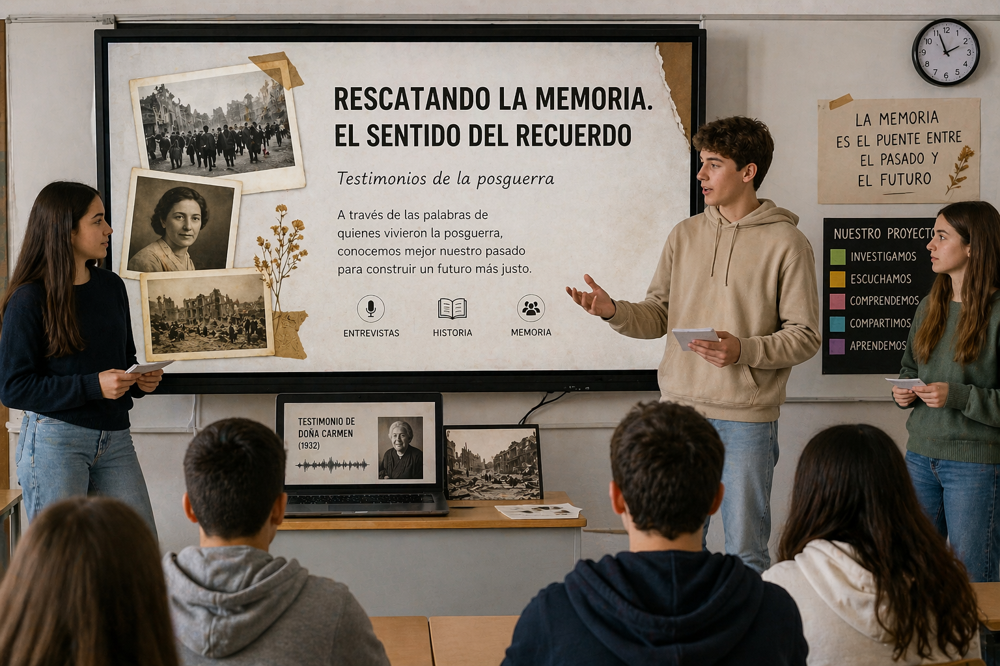

Rescatando la memoria con Canva y Audacity

En relación con esta situación de aprendizaje para 4.º de ESO en la materia de Geografía e Historia, titulada Rescatando la memoria. El sentido del recuerdo, el producto final del alumnado consistirá en la elaboración de un relato histórico digital a partir de entrevistas realizadas a personas mayores sobre la vida durante la posguerra española y el franquismo.
Para la realización de este producto final he decidido utilizar como herramientas digitales principales Canva y Audacity. La elección de estas herramientas está directamente relacionada con el objetivo del proyecto, ya que el alumnado deberá recoger testimonios orales y transformarlos en un producto digital que combine información histórica con recuerdos personales. En este sentido, Audacity permitirá grabar y editar fragmentos de audio de las entrevistas, mientras que Canva facilitará la creación de presentaciones o relatos digitales visuales en los que puedan integrar texto, imágenes y fragmentos sonoros.
La elección de estas herramientas también responde al nivel de competencia digital y a la edad del alumnado de 4.º de ESO. Se trata de aplicaciones relativamente intuitivas que permiten trabajar contenidos digitales sin requerir conocimientos técnicos avanzados. De esta manera, el alumnado puede centrarse en el análisis de la información histórica y en la elaboración del discurso final, utilizando la tecnología como un apoyo para comunicar sus conclusiones.
Asimismo, se ha tenido en cuenta el contexto del centro y la disponibilidad de dispositivos tecnológicos. El alumnado dispone de acceso a ordenadores y conexión a internet en el aula de informática y carritos de pórtatiles accesibles mediante reserva previa, lo que permite trabajar con estas herramientas sin dificultades. Además, ambas aplicaciones cuentan con versiones gratuitas o educativas que facilitan su uso en el entorno escolar. De este modo, el alumnado puede desarrollar su competencia digital de forma progresiva mientras investiga, analiza y comunica información histórica.
Como herramientas complementarias, el alumnado podrá utilizar Office 365 para tareas de organización y ofimática, como la redacción del guion de la entrevista o la elaboración del borrador del trabajo. También se propone el uso de Tiki-Toki para la creación de líneas temporales, que ayudarán a situar los testimonios recogidos dentro del contexto histórico de la posguerra española.